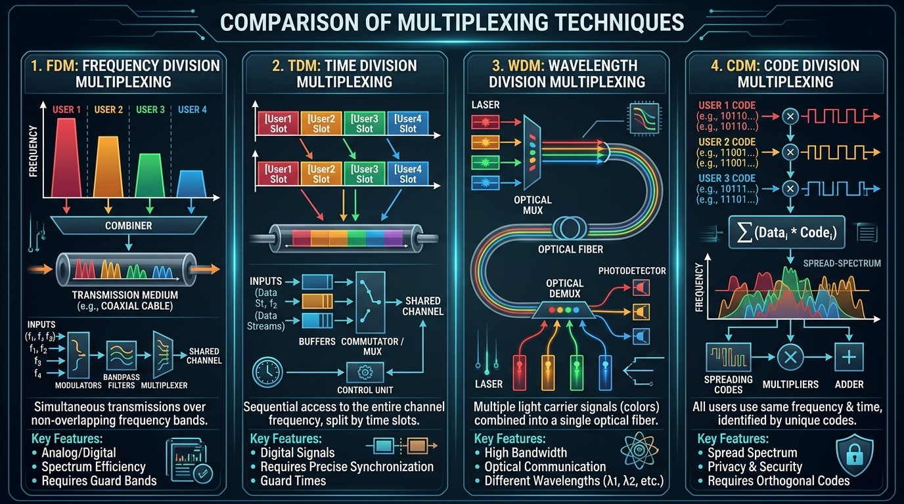

Learn the directionality of communication channels, characteristics of analog and digital signals, and how multiple signals share a single channel via Multiplexing techniques (FDM, TDM, WDM, CDM).
Transmission mode (or directionality) defines the direction of signal flow between two connected devices.
| Mode | Direction | Simultaneous? | Capacity Utilization | Real-World Examples |
|---|---|---|---|---|
| Simplex | Unidirectional (One-way) | No | Full bandwidth in 1 direction | Keyboard → CPU, Radio broadcast, TV |
| Half-Duplex | Bidirectional (Two-way) | No (One at a time) | Shared channel capacity | Walkie-Talkie, Legacy Ethernet (Hubs) |
| Full-Duplex | Bidirectional (Two-way) | Yes (Simultaneous) | Capacity split or dual channels | Telephone call, Modern Ethernet (Switches) |
Data is transmitted over physical media using electromagnetic signals, which can be either Analog or Digital.
| Feature | Analog Signal | Digital Signal |
|---|---|---|
| Waveform | Continuous sine wave | Discrete square wave / pulses |
| Values | Infinite continuous values | Discrete binary values (0 and 1) |
| Representation | Voice, natural sound, temperature | Computer binary data, CPU states |
| Noise Susceptibility | High (noise causes permanent distortion) | Low (errors easily detected and corrected) |
| Amplification | Amplifier (amplifies both signal and noise) | Repeater (regenerates clean bits) |
Multiplexing is a technique allowing multiple signals to share a single physical transmission line simultaneously. A Multiplexer (MUX) combines streams into one; a Demultiplexer (DEMUX) separates them at the receiver.

Used for analog signals. The available total bandwidth of the medium is divided into distinct non-overlapping frequency channels. Guard bands are placed between channels to prevent interference.
Examples: Radio radio broadcasting (FM stations), Cable TV channels.
Used for digital signals. Multiple connections share the same channel bandwidth by taking turns in dedicated time slots.
Used specifically in fiber optic networks. Multiple light signals of different wavelengths (colors) are multiplexed onto a single optical fiber strand. Dense WDM (DWDM) can combine over 80+ distinct channels on one fiber!
Allows multiple signals to occupy the same frequency band at the same time. Each transmitter is assigned a unique mathematical chip sequence (orthogonal code). Used in 3G mobile networks and GPS.